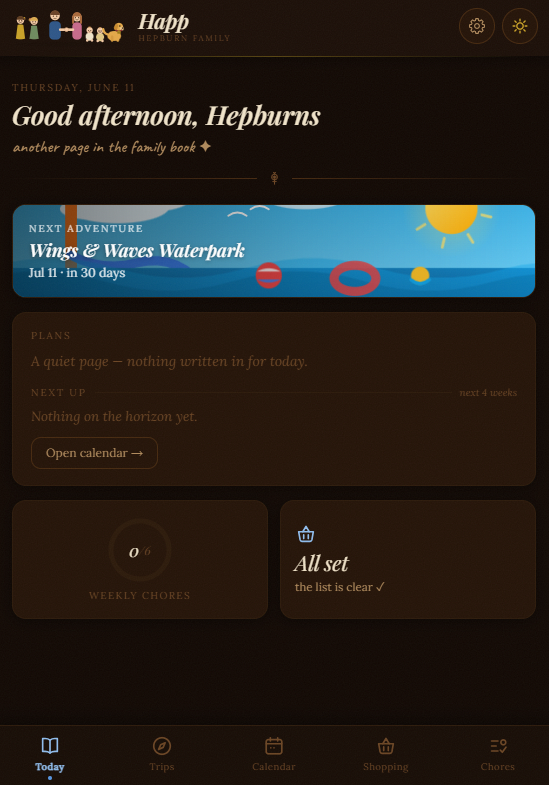
Family HQ
A React utility app that runs my household: shared shopping lists, family calendar, chore rotation, and trip planning. The most demanding stakeholders I've ever shipped for.
Technologist · Platform & Full-Stack Engineer · Website Builder
Senior tech by day. Web design whenever a local business needs one. Self-taught in everything.
Born in British Columbia in 1988, drawn to the mechanical and the digital since I was an infant. I got my first job at 13, at an airport, paid in flight time with an instructor — which taught me early that the best compensation is learning something you can't stop thinking about.
I'm a believer — with receipts — that anyone can teach themselves anything. I'm self-taught in web development, 3D modeling, cooking, pixel art, drawing, baking, and flying drones. AI is the most recent entry on that list — I started working with these tools the day they launched and never stopped, and they're now as much a part of my workshop as the keyboard. These days that same curiosity has me leading platform, operations, and AI initiative teams in regulated healthcare tech: an Azure-first, build-over-buy shop with 17+ active projects and 115+ business applications under my watch. I find the bottleneck and fix the system, not the symptom — equal parts Phoenix Project and stubborn optimism.
Off the clock: pizza and sourdough from scratch, couch co-op indie games, cats and dogs (don't make me choose), good coffee, and hiking the Oregon Cascades and Coast Range.
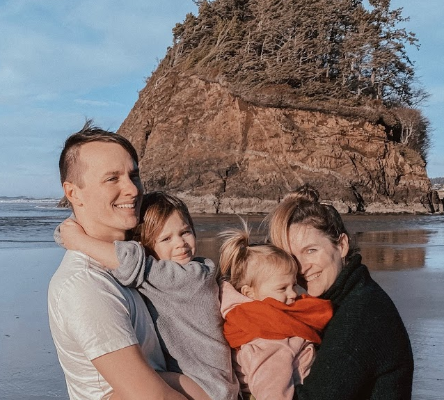
“People think of education as something they can finish.”
— Isaac Asimov
The honest version: I like untangling messy problems and leaving things a little calmer than I found them. Here's where I spend most of my time.
React, Node.js, SQL, and the unglamorous glue in between. A few years ago I went back to hands-on building because I missed it — turns out I think best with my hands on the code.
I've been building with AI since the day these tools appeared, and it stuck — today I lead AI initiatives at work, build practical tools with Anthropic through the Claude Partner Network, and develop with AI in the loop every day. It's some of the most fun I've had as an engineer.
These days I lead several teams at a biotech company, across a portfolio of about 20 projects. Mostly that means listening well, finding the bottleneck, and clearing the path so good people can do good work.
I also build websites for small businesses here in Yamhill County — modern, affordable, and made by me personally, start to finish. More on that below.
That's my whole hand — cards face up.
A few things I've built — personal projects, professional work, and client websites, most of it made the way I build everything now: with AI as a daily collaborator and me holding the pen.

A React utility app that runs my household: shared shopping lists, family calendar, chore rotation, and trip planning. The most demanding stakeholders I've ever shipped for.
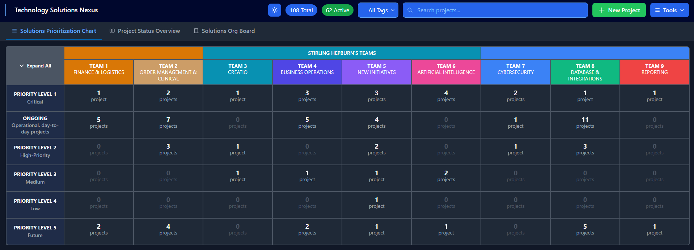
Introduced safe AI enterprise coding and developed the Technology department's project management software.
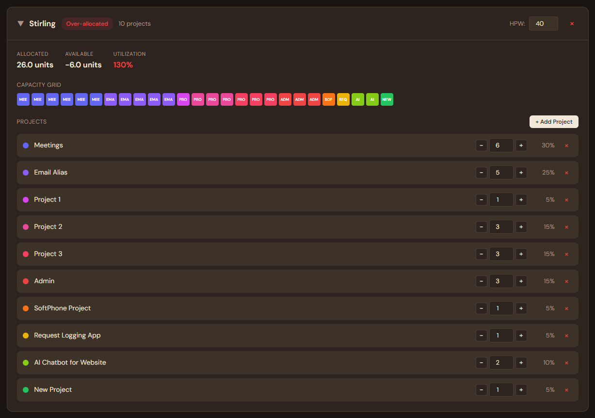
A developer-capacity planning tool that replaced spreadsheet archaeology with an honest picture of who's actually available — the bottleneck-finder's best friend.
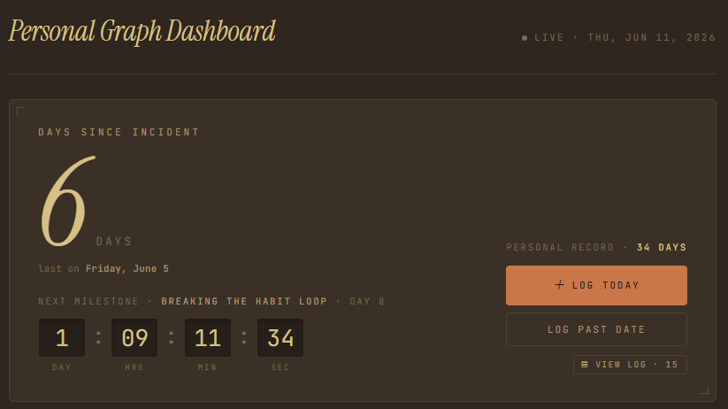
A small, fast habit tracker built to scratch my own itch. Proof that the self-taught loop still runs: have an idea, learn the gap, ship the thing.
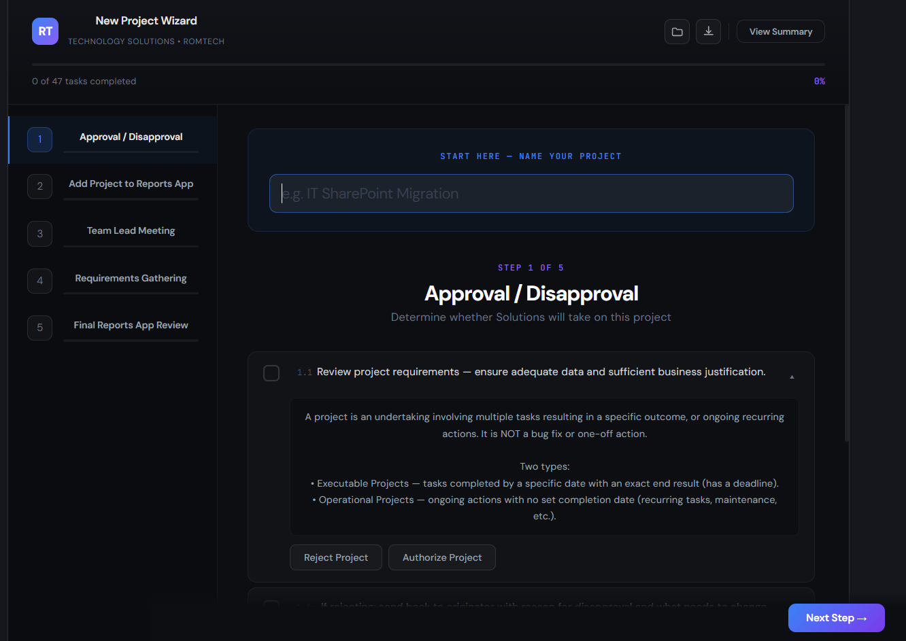
A guided intake wizard that walks a new project from "someone had an idea" to approved and scoped — so nothing gets lost between the hallway conversation and the kickoff.
Ron Siegel's education consulting practice. Built on Squarespace so Ron can keep it current himself — the right tool for the job, even when the job isn't hand-written code.
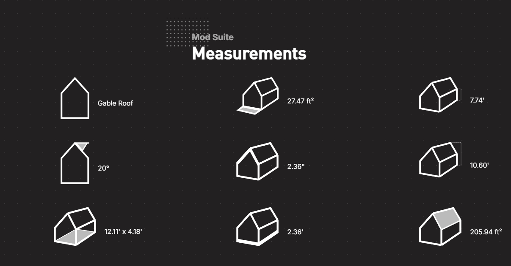
A B2B schematic showcase, designed and built by hand from scratch — no framework, no template, just careful markup and a clear story for the product.
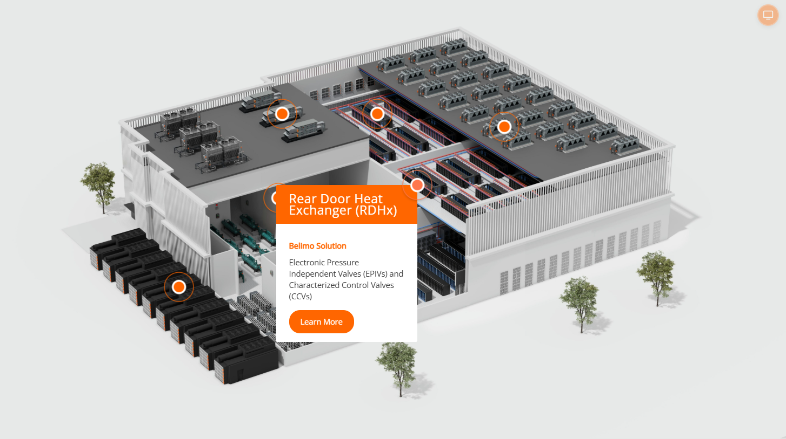
An interactive map built from scratch for Belimo, letting visitors explore a building system and discover the components at work inside it.
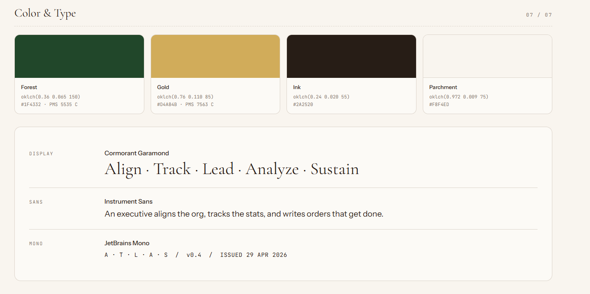
A special project I'm not quite ready to talk about yet — but I'm having a wonderful time building it. Watch this space.
A long-running collaboration I'm grateful for: Studio 3 handles the design, and I turn it into a fast, working website — most of them on DatoCMS.
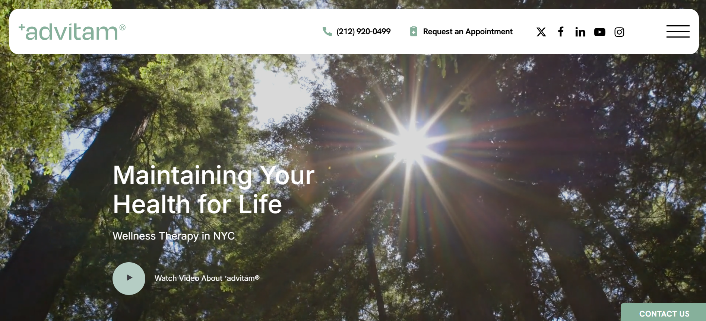
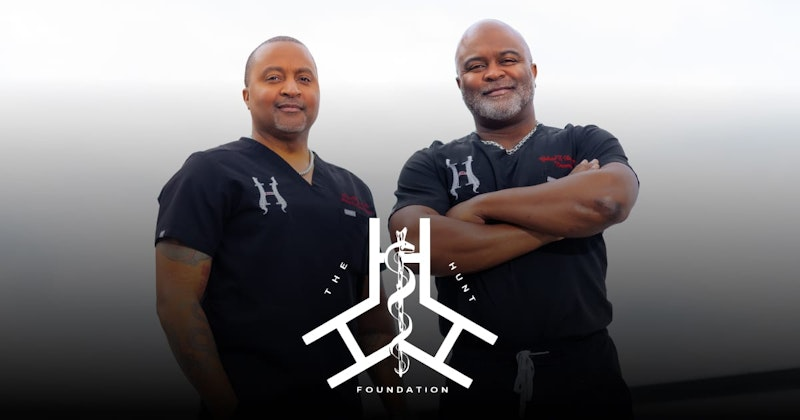
Small tools I built because I wanted them to exist. They live in the terminal, where I like to be, too.
A delightful PowerShell CLI for logging completed work and celebrating small wins.
github.com/sbhepburn/doneA PowerShell-only way of tracking unplanned work — because unplanned work never tracks itself.
github.com/sbhepburn/upA personal, SSH-accessible TUI todo and done tracker. Run it locally or on a server, then SSH in from your phone or laptop with any terminal app.
github.com/sbhepburn/ok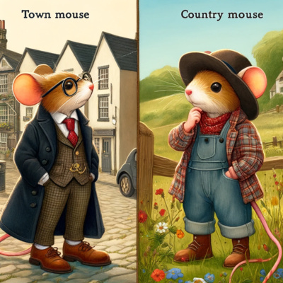
A podcast of children's stories — some beloved classics, some written by my wife, Kelly Hepburn — all of them read, recorded, and edited by me. Made for our own kids first, and shared in case yours enjoy them too.
Yamhill County web design & development
I design and build fast, modern, affordable websites for small local businesses — contractors, shops, trades, restaurants, and service businesses across Newberg, McMinnville, Dundee, Carlton, Yamhill, Lafayette, Dayton, Amity, Sheridan, Willamina, and the wider Willamette Valley wine country.
Here's the pitch, minus the pitch: you get a real human who builds it himself. The same engineer who ships enterprise platforms handles your site personally — modern performance, great design that looks good on desktop or mobile, local SEO that actually helps people find you, and direct communication with me. Modern tools — including AI, which I adopted early and use well — help me build faster and keep prices fair; every site is still designed and built by me, personally. No offshore template mill, no account-manager telephone game, no mystery invoices.